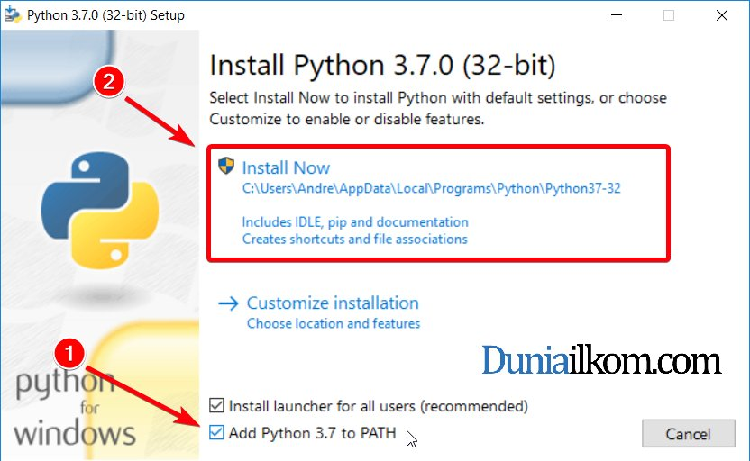

instalasi Python di Windows
Buka browser, kunjungi http://www.python.org/downloads/windows/ download versi terbaru 3.x atau melalui direct link https://www.python.org/ftp/python/3.8.3/python-3.8.3-amd64.exe
Buka (klik 2x) file installer python yang baru saja di download.
 Menu instalasi Python.
Abaikan versi di screenshot. Yang terpenting centang di nomor 1 (Add Python to PATH), lalu Install now.
Ikuti langkah instalasi sampai selesai.
- Jika instalasi selesai akan muncul pop up
Setup was successful. Itu berarti instalasi berhasil.
Mode Interpreter atau Interaktif
Modus interaktif/console/Interpreter adalah tool untuk menjalankan perintah-perintah atau fungsi-fungsi python. Modus ini biasanya digunakan untuk percobaan dan latihan.
- Buka CMD (Dimenu search windows ketik CMD, lalu klik).
- Di CMD, ketikan
pythonlalu enter. - Akan muncul versi Python yang dipakai.
Tanda >>> yang artinya mode Interpreter Python siap menerima kode.
Tanda ... secondary prompt atau sub prompt, mucul saat membuat blok kode dan menulis perintah tunggal dalam beberapa baris.
Contoh :
>>>print('Hello World!!!')
Hello World!!!
>>>for i in range(2) :
... print('Ya')
...
Ya
Ya
>>>
Untuk keluar dari mode interaktif, menggunakan tombol kombinasi Control+C kemudian Control+D. Atau menggunakan perintah exit() lalu enter.
Melalui File
Menjalankan kode program melalui file.
- Buat folder RP atau boleh dinamai lain, di
C:\. Lalu buka folder RP. - buat file berextensi
.pydi folder RP. Misalhello.py - Jadi, alamat file lengkapnya
C:\RP\hello.py. - Buka file hello.py dengan text editor, kemudian ketikkan
print("Hello World!"). Save. - Buka CMD.
- Pindah ke direktori tadi, dengan perintah
cd C:\RP\lalu enter. - Ketikan
lslalu enter, untuk melihat nama file dan direktori. - Ketikkan
python hello.pylalu enter. Harus sesuai dengan nama filenya, kalau salah akan muncul error. - Kode program berjalan.
Intinya di, python lokasi\file\name.py lalu enter.
Update : 2020-05-30